Заголовок новости Анализ рынка коммерческой недвижимости UD Group 2022
10 февраля 2023
926
Обзор рынка коммерческой недвижимости 2022 от UD Group является результатом исследования UD Group и носит обобщенный характер. Результаты отчета и, как следствие, использование результатов отчета не является основанием для привлечения к ответственности компании UD Group в отношении убытков третьих лиц. Публикация данных из отчета целиком или частично возможна только с упоминанием UD Group как источника данных.
На начало 2022 года официальная инфляция в России составляла 8,4%. В середине февраля 2022 года Центральный банк прогнозировал, что годовая инфляция снизится к концу года до 5-6%. Однако февральские события и введенные в отношении России санкции вызвали бурный рост цен.
После апрельского пика годовая инфляция в России снизилась в мае до 17,1%. Началась коррекция цен, которые необоснованно выросли на волне всеобщего ажиотажа. Укрепившийся рубль также начал двигать цены вниз. Летом дезинфляционные тенденции стали более устойчивыми. Дополнительное влияние на цены оказали административные меры государства. Но главным фактором, который тормозил и продолжает тормозить российскую инфляцию, эксперты называют охлаждение спроса на фоне снижения покупательской способности. Общая неопределенность и стресс мешает людям планировать жизнь и совершать покупки. На уровень спроса влияет снижение реальных доходов населения, отставших от роста цен. Кроме того, восстановлению потребительского спроса мешает сокращение кредитования.
Даже после снижения ставок условия на рынке заимствований еще далеки от докризисных. Банки ужесточили стандарты кредитования, стали более придирчивы в одобрении кредитов. По данным российских бюро кредитных историй, число банковских заемщиков в стране во втором квартале 2022 года сократилось на 300 тысяч человек. Объем суммарного кредитного портфеля за то же время уменьшился на 400 млрд рублей.
К августу 2022 годовая инфляция в России снизилась до 14,3%. При этом в месячном выражении три месяца подряд фиксировалась дефляция — снижение цен. В последний раз такое наблюдалось в стране больше десяти лет назад. Осенью инфляция в годовом выражении продолжила замедляться. В октябре она опустилась ниже 13%. Новым фактором, значение которого в стране еще не успели оценить в полной мере, стала частичная мобилизация. По мнению руководства Центробанка, сейчас она способствует замедлению инфляции: сотни тысяч мужчин, призванных на службу, перестали потреблять товары и услуги, снизив совокупный спрос. Но в будущем их выпадение из экономической жизни страны будет толкать цены вверх. Рынок труда лишился кадров, что неизбежно скажется на выпуске внутреннего продукта.
К концу 2022 года инфляция в стране составила 11,9%. По прогнозу Банка России в 2023 инфляция снизится до 5-7%, а в 2024 вернется к 4%.
Резкое повышение ставки в феврале с 9,5% до 20% было обусловлено необходимостью замедлить инфляцию, а также вернуть гражданам желание накапливать средства. Из-за новых жестких санкций в феврале-марте произошел массовый отток наличных денег из банков — дефицит ликвидности банковского сектора к 3 марта превысил 7,03 трлн. руб. После повышения ключевой ставки до 20% проценты по банковским вкладам выросли до 25%, что вернуло населению желание копить на депозитах — структурный профицит ликвидности банковского сектора по операциям с ЦБ на начало дня 10 июня составил 2,7 трлн. руб., согласно данным Банка России.
8 апреля Совет директоров Банка России снизил ключевую ставку на 300 базисных пунктов (б. п.) до 17% годовых. 29 апреля регулятор тоже понизил ставку на 300 б. п. - до 14%. 10 июня Совет директоров Банка России принял решение снизить ключевую ставку на 150 б. п., до привычных 9,50% годовых.
Следующее понижении ключевой ставки было 22 июля. Банк России снизил ключевую ставку на 150 базисных пунктов, до 8% годовых.
16 сентября Совет директоров Банка России снизил ключевую ставку на 0,5 пункта до 7,5%. За год это было шестое подряд снижение ключевой ставки. 16 декабря 2022 года Совет директоров принял решение сохранить ключевую ставку на уровне 7,50% годовых. Текущие темпы прироста цен являются умеренными, а потребительский спрос — сдержанным. Инфляционные ожидания населения и бизнеса существенно не изменились, оставаясь при этом на повышенном уровне. Однако внешние условия для российской экономики остаются сложными и по-прежнему значительно ограничивают экономическую деятельность.
годовом выражении продолжила замедляться. В октябре она опустилась ниже 13%.
К концу 2022 года инфляция в стране составила 11,9%. По прогнозу Банка России в 2023 инфляция снизится до 5-7%, а в 2024 вернется к 4%.
Изменения ВВП, в % к предыдущему году
Снижение ВВП РФ в 2022 году может оказаться меньше, чем ожидалось, и составит порядка 2,5% по предварительным прогнозам. В III квартале 2022 года ВВП РФ в годовом выражении снизился на 4% по данным оценки Федеральной службы госстатистики (Росстата). Данные Росстата оказались сильнее прогноза Минэкономразвития, которое ранее оценивало снижение ВВП в июле-сентябре 2022 года на 4,4%, и совпали с прогнозом Банка России.
Согласно данным Росстата, во II квартале 2022 года ВВП РФ снизился на 4,1% в годовом выражении после роста на 3,5% в 1-м квартале. В прошлом году ВВП РФ вырос на 4,7% после снижения на 2,7% в 2020 году.
Официальный прогноз Минэкономразвития предполагает спад ВВП РФ в 2022 году на 2,9%, снижение в 2023 году на 0,8%, рост на 2,6% в 2024 и 2025 годах.
Прогнозы ЦБ по динамике экономики на 2022-2025 годы более консервативны: снижение на 3-3,5% в 2022 году, на 1-4% в 2023 году, рост на 1,5-2% в 2024-2025 годах.
2022 год прошел под знаком политической и экономической неопределенности в России. Изменения в структуре экономики и бизнесе оказали влияние на рынок офисной недвижимости, прежде всего в Москве и Санкт-Петербурге. Введенные в I квартале санкции, геополитические ограничения и риски вынудили многие международные компании приостановить или прекратить свою операционную деятельность в России. Если в начале года преобладала растерянность и выжидательная позиция всех игроков рынка, то в середине года наметилось оживление. Во втором полугодии вакансия в бизнес-центрах начала снижаться.
Количество международных компаний в Казани было минимально, их уход практически не сказался на рынке офисной недвижимости. Международные компании, которые были представлены и занимали помещения в казанских бизнес-центрах, в большинстве своем, продолжили свою работу под российскими брендами. Более того, возрос интерес со стороны компаний телеком-сектора, банковских и финансовых организаций, а также госсектора, что обусловлено политикой и поддерживающими мерами федерального уровня.
В целом по результатам года казанский рынок офисной недвижимости демонстрирует хорошую устойчивость - доля вакантных площадей на конец года составила 2,7% (сократилась на 3,9 п. п. относительно декабря 2021 года). Сохраняется дефицит качественного предложения: введенный в 2021 году бизнес-центр класса А Orange полностью заполнен арендаторами (ранее заявленный в составе бизнес-центра коворкинг также полностью реализован в формате офисных помещений).
В офисных помещениях класса А уровень вакансии в конце года составил 1,8% (снизился на 10,3 п. п. относительно аналогичного периода 2021 года).
Такое снижение обусловлено планомерным заполнением бизнес-центров Orange и Kremlevskaya Plaza, где имелась высокая вакансия на конец 2021 года. В офисных помещениях класса В+ вакансия по результатам года составила 6,5% (выросла на 0,1 п. п. к 2021 году), в классе B – 2,5% (сократилась на 1,4 п. п. к 2021 году).
В целом по итогам года вакансия сократилась или осталась на том же уровне во всех классах. На рынке офисной недвижимости наблюдалось перераспределение арендаторов, компании, которые перевели часть сотрудников на удаленный или комбинированный формат работы, сократили штат постоянно находящихся в офисе сотрудников. Это позволило арендовать меньшие по площади, но более качественные офисные помещения либо просто оптимизировать затраты на аренду, снимая меньший офис. Эта же тенденция - трансформация и оптимизация – в 2022 году коснулась всех участников рынка коммерческой недвижимости, в том числе и арендодателей. Так, многофункциональный развлекательный центр Fun Park, расположенный по адресу ул. Мазита Гафури, 46, перепрофилировал часть своих площадей под бизнес центр А4 площадью 550 кв. м (средняя ставка аренды составляет 750 руб./кв. м.)
Открытием 2022 года можно назвать запуск нового ИТ-парка им. Башира Рамеева. Это третий по счету ИТ-парк в Татарстане. Он расположен по ул. Спартаковской, 2 и был построен за рекордные 6 месяцев. ИТ-парк войдет в состав цифрового квартала под названием «Сан», который будет ограничен улицами Туфана Миннуллина, Петербургской, Пушкина, Артема Айдинова, Марселя Салимжанова. В этих пределах уже находятся ИТ-парк и технопарк «Идея», где размещаются современные технологические компании. В периметр проекта также войдут: новый бизнес-центр «Урбан», ТЦ «Сувар Плаза», где располагаются офисы «Яндекса» и разработчиков игр, а также «Школа 21» Сбербанка. Новый ИТ-парк состоит из двух блоков. Первый расположился на месте бывшего кожевенно-обувного комбината «Спартак», а второй построили рядом. Корпуса объединили переходом. Общая площадь нового ИТ-парка составляет 49,3 тыс. кв. м, включает 3 тыс. рабочих мест (16 тыс. кв. м), а также коворкинг «Цифровая библиотека» (1 300 кв. м на 108 рабочих на втором этаже здания. Офисы, расположенные на 2 и 3 этажах, могут арендовать только ИТ-компании (определяются по ОКВЭД). Так, например, офис площадью 340 кв. м предлагается по ставке 1 605 руб./кв. м. (в том числе НДС), при этом офисы полностью меблированы (предполагается отдельный платеж за пользование мебелью). Уровень ставки аренды зависит от размера помещения: чем больше площадь - тем больше ставка. Такая обратная корреляция объясняется принципом «большая компания - больший бюджет». Помещения на первом этаже сдаются сервис-резидентам – компаниям, которые не имеют привязку к ИТ-специализации. Это помещения в предчистовой отделке, которые имеют отдельный вход с улицы. Ставка аренды помещения 137 кв. м составит 1554 руб./кв. м (в том числе НДС, не включая эксплуатационные расходы).
По уровню вакансий в Казани лидирует Кировский район с показателем 10,5%. Это по-прежнему связано с тем, что большинство офисных пространств в Кировском районе (на сегодняшний день 80%) относятся к классу С. В большинстве своем это устаревшие помещения, не удовлетворяющие запросам современных организаций и требующие реновации.
По результатам года вакансия сократилась во всех районах Казани, что говорит об устойчивости и стабильности рынка офисной недвижимости вне зависимости от внешних неблагоприятных факторов.
По уровню вакансий в Казани лидирует Кировский район с показателем 10,5%. Это по-прежнему связано с тем, что большинство офисных пространств в Кировском районе (на сегодняшний день 80%) относятся к классу С. В большинстве своем это устаревшие помещения, не удовлетворяющие запросам современных организаций и требующие реновации.
По результатам года вакансия сократилась во всех районах Казани, что говорит об устойчивости и стабильности рынка офисной недвижимости вне зависимости от внешних неблагоприятных факторов.
Средние ставки аренды по итогам года составили: в классе А - 1 704 руб./кв. м (+9,4% к показателю начала года), в классе В+ - 1140 руб./кв. м. (+10,3%) в классе B - 844 руб./кв. м. (+3,9%).
В расчете средней ставки в классе B+ не учтено освободившееся помещение на первом этаже Бизнес Парка на Островского, 87, его ставка превышает более чем в 2 раза среднюю ставку аренды данного бизнес-центра. Помещение расположено на первом этаже бизнес-центра, но не имеет отдельного входа с улицы, вход в помещение осуществляется с общего входа в бизнес-центр. Его сложно отнести к торговому или офисному объекту в чистом виде.
По районам наибольший прирост ставок аренды зафиксирован в Приволжском и Кировском районах. Прирост составил +14,7% и +7% соответственно.
Все бизнесы в определенной степени зависят друг от друга и подстраиваются под изменения экономики. Рынок коммерческой недвижимости зависит от арендаторов и от ситуации в бизнесе своих арендаторов. На протяжении 2022 года рынок коворкингов, как и другие рынки, двигался по схеме «снижение – ожидание – восстановление».
В 2022 году предложение на рынке коворкингов Казани выросло относительно 2021 года на 68% к общей площади предложения. Прирост обеспечен выходом крупного федерального игрока SOK (4200 кв. м) на казанский рынок коворкингов, также были запущены коворкинг «Цифровая библиотека» в составе ИТ-парка им. Башира Рамеева (1300 кв. м) и некоммерческий коворкинг «Доброй Казани» (506 кв. м).
Примечательно, что ультрасовременное офисное пространство SOK Пушкин, расположенное по адресу Пушкина, 2 в здании «Золотого Яблока», еще до запуска проекта было сдано моноарендатору. Им стал «Совкомбанк», который открыл смарт-офис на 900 рабочих мест для сотрудников контактного центра. Это уже не первое сотрудничество между SOK и «Совкомбанком», аналогичные сделки заключались и в других городах присутствия SOK.
В августе 2022 года в Казани был запущен коворкинг «Цифровая библиотека» в новом ИТ-парке им. Башира Рамеева по ул. Спартаковской, 2. Коворкинг расположен на втором этаже здания и рассчитан на 108 рабочих мест, общая площадь – 1300 кв. м. Он открыт не только для специалистов в сфере ИТ, но и представителей других сфер бизнеса, при этом коворкинг представлен только в формате «open space». Для удобства предусмотрены: переговорная комната (предоставляется бесплатно, не более чем на 30 мин.), спортивная зона для снятия стресса, обеденная зона. Стоимость аренды фиксированного места в месяц составляет 9000 руб., разовое посещение – 600 руб. в день.
Открытие коворкинга Workki по адресу ул. Баумана, д. 86, которое было одним из самых ожидаемых в III квартале 2022 года, перенесено на март 2023 года. По плану коворкинг займет верхние три этажа (2000 кв. м) здания и будет рассчитан на 367 рабочих мест, а на первом этаже предполагается торговая зона.
Не обошлось и без закрытий – коворкинг Smart Spacе (общая площадь 698 кв. м), расположенный по адресу Гаврилова, 1, прекратил свою работу в связи со сменой собственника здания. Новые собственники планируют использовать площади в других целях. У сети остался один действующий коворкинг, расположенный в Пестречинском районе. Второе закрытие произошло в Ново-Савиновском районе города. Навигатор Кампус (по словам персонала коворкинга) был закрыт по причине личных причин собственника бизнеса. Площадь выбытия по итогам 2022 года составила 1 898 кв. м.
Средняя ставка аренды одного рабочего места в коворкингах Казани составляет 9 688 руб. в месяц и включает все услуги, разовое посещение в среднем по году - 627 руб.
Сейчас в городе 13 коммерческих коворкингов, 4 некоммерческих коворкинга и 2 пространства, работающих в формате оборудованных мини-офисов премиального сегмента. Общая площадь данного сегмента составляет 17 616 кв. м, в том числе с учетом некоммерческих коворкингов, занимающих 1746 кв. м. Некоммерческие коворкинги в Казани представлены коворкингом «Авиатор» в одноименном технопарке, коворкингом по адресу ул. Сеченова, 5, коворкингами в ДК «Московский» и ДК «Сайдаш».
Территориально коворкинги сосредоточены в Вахитовском районе, там представлено 70% площадей от общего предложения. Такое распределение коррелирует со спросом и предложением на рынке офисной недвижимости в целом.
Макроэкономические события 2022 года спровоцировали массовые заявления западных компаний об уходе или временной приостановке деятельности на территории Российской Федерации. Закрытия магазинов западных ритейлеров повлияли и на объем нового предложения, и на общий трафик покупателей, особенно в крупных торговых центрах. Если в первом полугодии 2022 года собственники торговых площадок занимали позицию ожидания, то во второй половине сменили ее на активные попытки заполнить свободные площади. При этом условия для новых арендаторов предоставлялись максимально комфортные и на рынке сформировалась зависимость: чем выше вакансия в торговом центре, тем лучшие условия могут получить новые арендаторы.
Также отмечается размытие критериев для «якорей» (крупные компании, привлекающие в торговый центр трафик): если ранее только международные «якорные» ритейлеры получали выгодные условия (например, отсутствие фиксов и «голый» процент от оборота), то в 2022 году арендаторы, которые могут прийти на их место, претендовали на аналогичные условия. Многие торговые центры на переговорах с новыми арендаторам предлагали открытие на условиях «все включено», а также более низкие фиксированные ставки аренды с последующим переходом на расчет аренды, как процента от оборота, арендные каникулы и другие преференции.
Ситуация на рынке торговой недвижимости была неоднородна и зависела от объема вакансий и спроса. Объекты, максимально сохранившие свой трафик с минимальным объемом вакантным площадей, такие как KazanMall и «Горки Парк», были осторожны в корректировке условий, т.к. смогли сохранить хорошую посещаемость, в том числе благодаря эффективным маркетинговым кампаниям и программам лояльности. Однако ТРЦ МЕГА, несмотря на высокий процент пустующих площадей и снижающийся трафик, не пересмотрела условия и остается наиболее недоступной для входа операторов.
На поведении потребителей также сказались новые условия неопределенности - потребители стали больше копить и меньше тратить на товары не первой необходимости. Поэтому районные торговые центры из-за нацеленности на FMCG в наименьшей степени находились в зоне риска.
В I полугодии 2022 года многие девелоперы заморозили или приостановили проекты новых торговых объектов. Однако уже во II полугодии ситуация начала меняться. Например, продолжились работы в комьюнити-центре ART общей площадью 40 000 кв. м (торговая площадь 21 200 кв. м) на территории ЖК «Арт Сити». Здание представляет собой многофункциональный комплекс с торговым центром и бизнес-центром класса А площадью 10 000 кв. м. Ввод в эксплуатацию ожидается в 2024 году.
Проект комьюнити-центра ART
«Наш проект, комьюнити-центр «ART», полностью спроектирован под социальные и культурные потребности жителей района и города. Мы стараемся создать его не только визуально привлекательным, «живым» и современным с точки зрения уровня комфорта, но и полным разнообразия услуг и развлечений.» (Мугад Салихов, директор по развитию, UD Group)
На начало года в казанских торговых центрах было представлено 125 иностранных ритейлеров, 25 из них на конец года приостановили свою деятельность, это: Puma, Reebok, Adidas, Levi’s, Zara, Bershka, Pull & Bear, Stradivarius, Oysho, Zara Home, Massimo Dutti, H&M, Sephora от «Иль де Ботэ», The Body Shop, re:Store, Mothercare, Uniqlo, IKEA, Starbucks, Tom Tailor, Pizza Hut, Kiabi, Deichmann, Swarovski, Helly Hansen.
Однако по некоторым брендам были рассмотрены альтернативные вариации преобразования бизнеса в России: продажа российских подразделений международным игрокам из дружественных стран, уход на полноценный формат франшизы, локализация брендов и иные форматы.
• испанский холдинг (бренды Zara, Bershka, Massimo Dutti, Pull & Bear и др.) планирует реализовать российский бизнес ливанской группе компаний Daher. На рынок ливанцы придут со своим брендом и коллекциями;
• Starbucks стал Stars Coffee – активы выкупил музыкант и бизнесмен Тимур Юнусов, известный как Тимати, и ресторатор Антон Пинский;
• магазины Lego датского производителя конструкторов открылись под названием «Мир кубиков». Эксклюзивный партнер компании Inventive Retail Group, планирует также продавать конструкторы, в том числе Lego;
• американская компания Yum! Brands продала около 70 ресторанов сети KFC ижевскому франчайзи «Смарт Сервис». Новые точки сети откроются под брендом Rostic’s;
• норвежский бренд одежды Helly Hansen ожидает ребрендинг, возможное название «Хансен»;
• французский Decathlon не расторг договоры аренды и продолжал арендовать здания рядом с торговым центром «Тандем» и на ул. Родины.
При этом наблюдается высокий интерес со стороны российских брендов к площадкам, которые ранее занимали международные операторы. Известно, что российский бренд Gloria Jeans планирует занять торговые площади, ранее принадлежавшие H&M, Zara и Adidas. Melon Fashion Group (МФГ), который включает в себя российский бренд женской одежды и аксессуаров Lime, сеть мультибрендовых магазинов модной одежды и аксессуаров «Снежная королева», турецкий фешн-бренд Koton также активно занимают площади H&M.
Уход международных брендов с российского рынка способствовал развитию параллельного импорта в стране - маркетплейсы Ozon и Wildberries начали торговать товарами международных брендов. Также получили развитие доставки из европейских стран: «Почта России» и CDEK запустили платформы «Почта Global» и CDEK Forward, которые позволяют делать покупки на международных сайтах.
Уровень вакансии в качественных торговых центрах Казани на конец года составил 16,4%. При этом максимальный показатель вакансии сохраняется в торговом центре МЕГА – 53%, где максимально сконцентрированы международные бренды, которые приостановили свою деятельность.
Сейчас на территории Казани 51 торговый объект, суммарная площадь составляет порядка 1 млн. кв. м. Сюда включены как торговые площади операторов DIY и продуктовых ритейлеров, так и 13 качественных современных торговых центров (под качественными торговыми центрами принимаются концептуальные объекты, с арендопригодной площадью более 17 тыс. кв. м), общей площадью 814,7 тыс. кв. м, из них 457,4 тыс. кв. м - арендопригодная площадь.
В IV квартале за счет общей экономической неопределенности и негативной новостной повестки часть арендаторов взяли паузу чтобы подстроиться под текущие обстоятельства при необходимости. По результатам года стрит-ритейл оказался наиболее устойчивым и востребованным сегментом коммерческой недвижимости.
Доля вакантных площадей в разрезе торговых коридоров составляет порядка 2%, где наибольший уровень вакансии – 5,9% - наблюдается на улице Чистопольской, а на улицах Баумана, Университетская и Достоевского вакансия нулевая.
Средняя ставка аренды во II полугодии составила 993* руб./кв. м. (в том числе НДС), что выше на 15% этого значения на начало года. Максимальный рост был зафиксирован в Московском и Вахитовском районах, +24% и 23% соответственно. Расчет ставки аренды по сегменту стрит-ритейла здесь и далее ведется по свободным помещениям, представленным в открытом источнике на сайте cian.ru.
По торговым коридорам Казани наибольшая ставка зафиксирована на улицах Пушкина, Островского и Чернышевского.
Как показывают результаты года, ликвидные объекты, расположенные в востребованных локациях с интенсивным пешеходным трафиком, не потеряли в уровне арендной ставки и в спросе у арендаторов.
В 2022 году наблюдался рост стоимости (по предложению) помещений формата стрит-ритейл. На конец года средняя цена 1 кв. м составила 139 252 руб., по сравнению с началом года она выросла на 67%. Высокая неопределенность на рынке жилой недвижимости, недоступность лотов (из-за роста цен, колебаний ключевой ставки), стагнация рынка жилья заставили инвесторов переключиться на коммерческие объекты. В такой ситуации площади стрит-ритейла выглядели привлекательно.
В 2022 году наблюдался рост стоимости (по предложению) помещений формата стрит-ритейл. На конец года средняя цена 1 кв. м составила 139 252 руб., по сравнению с началом года она выросла на 67%. Высокая неопределенность на рынке жилой недвижимости, недоступность лотов (из-за роста цен, колебаний ключевой ставки), стагнация рынка жилья заставили инвесторов переключиться на коммерческие объекты. В такой ситуации площади стрит-ритейла выглядели привлекательно.
Также в декабре 2022 года было достигнуто соглашение об использовании татарстанским маркетплейсом KazanExpress первого в Татарстане бондового склада на мощностях «Почты России», который расположен рядом с аэропортом. Эксперимент начнется в апреле 2023 года. «Почта России» выделила два склада на базе своих логистических объектов в Москве и Казани и готова оперативно расширить площадь бондовых складов в случае высокого интереса со стороны клиентов.
Вакансия логистических центров класса А и В по итогам второго полугодия 2022 года составила 5,2%, что на 2,4 п. п. выше аналогичного показателя в первом полугодии, и ниже показателей конца 2021 года на 4 п. п. В 2021 году высокий уровень вакансии на складские помещения был вызван переездом крупного арендатора Х5 в свой логистический центр. В связи с этим, освободились большие площади качественных арендопригодных помещений и выросла вакансия. Сейчас Казань продолжает укреплять свои позиции в качестве важнейшего логистического хаба России, что так или иначе будет провоцировать рост складской недвижимости.
Ставки аренды в классе А составили 609 руб./кв. м, в классе В – 523 руб. /кв. м. Средняя ставка аренды составила 595 руб./кв. м (ставки указаны без НДС, с учетом эксплуатационных
Массовые закрытия магазинов западных ритейлеров влияют на объем нового предложения и общий трафик покупателей, особенно в крупных торговых центрах. Торговые центры, которые сильнее всего пострадали от ухода западных брендов, рассматривают варианты перепрофилирования своих территорий. За счет создания гибридных пространств продолжат появляться варианты общественных территорий, галерей и дизайнерских ярмарок. Так в мае 2022 года ТРЦ МЕГА в Казани открыла выставку «Точка отсчета», на которой были представлены работы локальных художников, а в июне заработала выставка загородных объектов Татарстана. В ТЦ KazanMall в октябре проводилась выставка недвижимости от ведущих агентств недвижимости Казани.
Объекты с одной функцией (монофункциональные) продолжат работать на микрорайонном и районном уровне. Они все так же будут востребованы в зоне жилой застройки, в местах сильных автомобильных и пешеходных потоков.
Негативным фактором является малый объем нового строительства, который обусловлен как переносом сроков открытия новых ТЦ, так и тенденцией к смене их форматов. Данный фактор свидетельствует о выжидательной позиции девелоперов в планах развития отрасли. В целом рынок фокусируется на объектах небольшого масштаба (5-20 тыс. кв. м), поскольку они опираются на более устойчивую потребительскую аудиторию. Хорошие перспективы наметились у ритейла в составе МФК (многофункциональных комплексов).
Еще одним фактором, который оказывает серьёзное влияние на рынок торговой недвижимости, является переход покупателей в онлайн. У владельцев торговых центров формируется стратегическая задача по включению онлайн-заказов в товарооборот физического магазина, альтернативой может стать смена формата торгового центра, включение и расширение развлекательной функции в его составе.
Параллельно уходу международных сетей из торговых центров развивается и встречный интерес со стороны иностранных ритейлеров, которые в 2022 году приняли решение выйти на российский рынок или расшириться – это армянский Alex YVN, турецкие Ipekyol и Twist, Enza Home, французский Precise Paris и другие. Однако сохраняющийся высокий уровень риска в экономике и трансформации, происходящие с арендаторами ТЦ, продолжат корректировать планы всех участников рынка, что может привести в 2023 году к росту уровня свободных площадей до 20%.
«На наш взгляд, на данный момент один из актуальных форматов коммерческой недвижимости – это многофункциональные комплексы (МФК). Они объединяют в себе торговые пространства, места для развлечений, отдыха, хобби и рабочие места разных форматов, включая коворкинги и привычные офисы, могут иметь в своем составе жилье или вписываться в жилую застройку. МФК – ответ на актуальные тренды: «15-минутный город», полицентричность. Эти концепции предполагают такое развитие города, когда места притяжений создаются в каждом районе, а все необходимое житель современного мегаполиса может получить в пешей доступности от дома, потратив не более 15 минут. » (Виталия Колегов, управляющий директор UD Group)
В кризис особенно хорошо показали себя супермаркеты федеральных сетей, они являются самыми надежными арендаторами на сегодняшний день. Также на казанском рынке растет спрос со стороны федеральных продуктовых ритейлеров в сегменте дискаунтеров. Одно из ожидаемых открытий - выход на казанский рынок сети «Чижик» от X5 Retail Group. Конкурентами «Чижика» в Казани могут стать магазины «Магнит Моя цена», «Находка» и «Светофор». Операторы на протяжении 2022 года находился в поиске помещения от 380 до 1000 квадратных метров (в том числе с торговой зоной не менее 260 м).
Продолжается тренд массового перехода покупателей в онлайн, что способствует стремительному развитию форматов даркстор и пунктов выдачи заказов в сегменте стрит-ритейла. По данным АКИТ (Ассоциации компаний интернет-торговли) объем российского рынка интернет-торговли в 2022 году вырос более чем на 30% и достиг 5,17 трлн рублей.
«Наша команда оказывает полный спектр услуг по управления коммерческой недвижимостью разных форматов: ритейл-парк, торговые и офисные здания, стрит-ритейл, паркинги. Традиционные факторы, влияющие на стоимость аренды – это локация, концепция, техническое состояние объекта. Для разных видов бизнеса существенными могут быть подъездные пути, парковка, удобный вход, панорамные окна, наличие обслуживающей организации. Все более важным становится тенант-микс. Сейчас наши клиенты все чаще хотят получить качественное предложение, учитывающее будущих соседей и их потенциальное влияние на бизнес. Именно объекты, в котором наиболее продуманный тенант-микс, и являются максимально востребованными, в качестве примера могу назвать стрит-ритейл в ЖК Арт Сити, а также в Ритейл-Парке Udacha в ЖК Царёво Village. Получается, что на спрос и потенциал объекта будет влиять, в том числе, и качественное управление.» (Регина Пашагина, руководитель направления FM, UD Group)
В структуре спроса большая доля приходится на транспортные, строительные компании, ИТ-компании, медицинский и образовательный бизнесы, а также госучреждения. При этом арендаторы офисной недвижимости сокращают издержки при заезде и отдают предпочтения готовым объектам. В связи с экономической ситуацией спрос на помещения, требующие отделки и финансовых вложений, значительно сократился.
В целом на рынке казанской офисной недвижимости сохраняется сбалансированная ситуация. Можно прогнозировать, что активность арендаторов при низком вводе новых офисных площадей (класс А) позволит и дальше удерживать вакансию на низком уровне. Незначительно падают цены на старый невостребованный фонд или офисы, удаленные от главных магистралей города. Однако явных предпосылок к заметной коррекции коммерческих условий не прогнозируется.
В целом по стране события года способствовали переходу проектов на модель built-to-suit (строительство под конкретного заказчика). Наблюдается переток непрофильных девелоперов в другие сегменты. По некоторым площадкам с офисным потенциалом девелоперы принимают решение строить жилье. В сегменте коммерческой недвижимости остаются только опытные игроки, у которых есть понимание, как рассчитывать себестоимость офисного проекта, профессионально оценивать локацию и экспертиза в данном сегменте.
Коворкинги в сегодняшних реалиях становятся еще более востребованным сегментом, поскольку дают возможность арендаторам получить быстрое и качественное решение по рабочему пространству. Они сочетают в себе более гибкие условия по аренде и включенный в контракт сервис, нежели классическая аренда с расходами на ремонт и оснащение офиса. Сегодня клиенты коворкингов - это госкомпании, телекоммуникационные компании, банки. В том числе и западные компании, которые переформатируют свой бизнес на территории России и имеют совершенно иные запросы в отношении офиса, нежели раньше. На рынке появился тренд на «борьбу за кадры». Поэтому локация офисов, его дизайн и удобство инфраструктуры рядом выходят на первый план при выборе помещений.
Кроме этого, сегодня мы наблюдаем переориентацию поставок: с Москвы и Московской области - на регионы, в связи с чем Казань становится еще более востребованной среди арендаторов складов. Казань обладает перспективной транспортной инфраструктурой. Это связано, во-первых, со снабжением и развитием прилегающих регионов внутри страны, а во-вторых, с логистикой товаров на пути из Азию в Европу и обратно. Через Казань будет проходить автобан Европа-Западный Китай, ключевую часть которого, трассу М-12 (Москва - Казань), правительство обещает проложить к 2024. Все эти факторы подталкивают компании наращивать складские мощности на территории республики.
На протяжении последних лет основными драйверами спроса на складские площади являются e-commerce и классический ритейл, преимущественно продуктовый, развивающий в том числе и популярный формат дискаунтеров.
При этом, ввиду ограниченности качественного предложения на региональном рынке, сделки совершаются по формату built-to-suit («строительство под клиента»). Этому способствует и специфика запросов ритейлеров, которые часто можно реализовать только путём строительства в соответствии с их требованиями. Таким образом, складской сегмент в очередной раз демонстрирует свою устойчивость перед кризисами. Огромный потенциал e-commerce дает все предпосылки прогнозировать высокий спрос в данном сегменте.
«Мы видим неудовлетворенный спрос на объекты light industrial. Его формируют текущие резиденты производственно-складских помещений на территории промзон, подлежащих редевелопменту, а также селлеры, которые активно заходят на маркетплейсы и ищут площади под организацию собственного производства. Оценив потенциал рынка производственно-складской недвижимости в агломерации Казани, компания UD Group приступила к разработке собственной концепции проекта в формате light industrial.» (Регина Лочмеле, руководитель направления «Стратегический маркетинг», UD Group)
Макроэкономические показатели
ИнфляцияНа начало 2022 года официальная инфляция в России составляла 8,4%. В середине февраля 2022 года Центральный банк прогнозировал, что годовая инфляция снизится к концу года до 5-6%. Однако февральские события и введенные в отношении России санкции вызвали бурный рост цен.
После апрельского пика годовая инфляция в России снизилась в мае до 17,1%. Началась коррекция цен, которые необоснованно выросли на волне всеобщего ажиотажа. Укрепившийся рубль также начал двигать цены вниз. Летом дезинфляционные тенденции стали более устойчивыми. Дополнительное влияние на цены оказали административные меры государства. Но главным фактором, который тормозил и продолжает тормозить российскую инфляцию, эксперты называют охлаждение спроса на фоне снижения покупательской способности. Общая неопределенность и стресс мешает людям планировать жизнь и совершать покупки. На уровень спроса влияет снижение реальных доходов населения, отставших от роста цен. Кроме того, восстановлению потребительского спроса мешает сокращение кредитования.
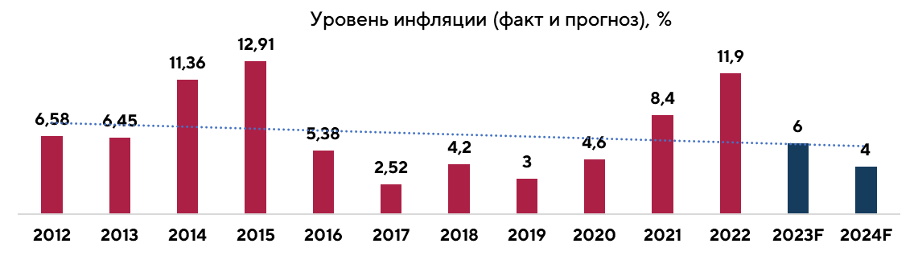
Даже после снижения ставок условия на рынке заимствований еще далеки от докризисных. Банки ужесточили стандарты кредитования, стали более придирчивы в одобрении кредитов. По данным российских бюро кредитных историй, число банковских заемщиков в стране во втором квартале 2022 года сократилось на 300 тысяч человек. Объем суммарного кредитного портфеля за то же время уменьшился на 400 млрд рублей.
К августу 2022 годовая инфляция в России снизилась до 14,3%. При этом в месячном выражении три месяца подряд фиксировалась дефляция — снижение цен. В последний раз такое наблюдалось в стране больше десяти лет назад. Осенью инфляция в годовом выражении продолжила замедляться. В октябре она опустилась ниже 13%. Новым фактором, значение которого в стране еще не успели оценить в полной мере, стала частичная мобилизация. По мнению руководства Центробанка, сейчас она способствует замедлению инфляции: сотни тысяч мужчин, призванных на службу, перестали потреблять товары и услуги, снизив совокупный спрос. Но в будущем их выпадение из экономической жизни страны будет толкать цены вверх. Рынок труда лишился кадров, что неизбежно скажется на выпуске внутреннего продукта.
К концу 2022 года инфляция в стране составила 11,9%. По прогнозу Банка России в 2023 инфляция снизится до 5-7%, а в 2024 вернется к 4%.
Ключевая ставка
В начале 2022 года Центробанк держал низкую ключевую ставку для поддержки экономики в условиях пандемии. 14 февраля ключевая ставка была повышена на 1 п. п. и составила 9,5%. 28 февраля ЦБ резко повысил ставку - с 9,5% до 20% - в ответ на рост девальвационных и инфляционных рисков. С 28 февраля до 8 апреля ставка составляла рекордные 20%, затем регулятор три раза снижал ее на 3 п. п.Резкое повышение ставки в феврале с 9,5% до 20% было обусловлено необходимостью замедлить инфляцию, а также вернуть гражданам желание накапливать средства. Из-за новых жестких санкций в феврале-марте произошел массовый отток наличных денег из банков — дефицит ликвидности банковского сектора к 3 марта превысил 7,03 трлн. руб. После повышения ключевой ставки до 20% проценты по банковским вкладам выросли до 25%, что вернуло населению желание копить на депозитах — структурный профицит ликвидности банковского сектора по операциям с ЦБ на начало дня 10 июня составил 2,7 трлн. руб., согласно данным Банка России.
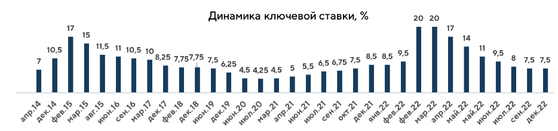
8 апреля Совет директоров Банка России снизил ключевую ставку на 300 базисных пунктов (б. п.) до 17% годовых. 29 апреля регулятор тоже понизил ставку на 300 б. п. - до 14%. 10 июня Совет директоров Банка России принял решение снизить ключевую ставку на 150 б. п., до привычных 9,50% годовых.
Следующее понижении ключевой ставки было 22 июля. Банк России снизил ключевую ставку на 150 базисных пунктов, до 8% годовых.
16 сентября Совет директоров Банка России снизил ключевую ставку на 0,5 пункта до 7,5%. За год это было шестое подряд снижение ключевой ставки. 16 декабря 2022 года Совет директоров принял решение сохранить ключевую ставку на уровне 7,50% годовых. Текущие темпы прироста цен являются умеренными, а потребительский спрос — сдержанным. Инфляционные ожидания населения и бизнеса существенно не изменились, оставаясь при этом на повышенном уровне. Однако внешние условия для российской экономики остаются сложными и по-прежнему значительно ограничивают экономическую деятельность.
годовом выражении продолжила замедляться. В октябре она опустилась ниже 13%.
К концу 2022 года инфляция в стране составила 11,9%. По прогнозу Банка России в 2023 инфляция снизится до 5-7%, а в 2024 вернется к 4%.
Изменения ВВП, в % к предыдущему году
Снижение ВВП РФ в 2022 году может оказаться меньше, чем ожидалось, и составит порядка 2,5% по предварительным прогнозам. В III квартале 2022 года ВВП РФ в годовом выражении снизился на 4% по данным оценки Федеральной службы госстатистики (Росстата). Данные Росстата оказались сильнее прогноза Минэкономразвития, которое ранее оценивало снижение ВВП в июле-сентябре 2022 года на 4,4%, и совпали с прогнозом Банка России. Согласно данным Росстата, во II квартале 2022 года ВВП РФ снизился на 4,1% в годовом выражении после роста на 3,5% в 1-м квартале. В прошлом году ВВП РФ вырос на 4,7% после снижения на 2,7% в 2020 году.
Официальный прогноз Минэкономразвития предполагает спад ВВП РФ в 2022 году на 2,9%, снижение в 2023 году на 0,8%, рост на 2,6% в 2024 и 2025 годах.
Прогнозы ЦБ по динамике экономики на 2022-2025 годы более консервативны: снижение на 3-3,5% в 2022 году, на 1-4% в 2023 году, рост на 1,5-2% в 2024-2025 годах.
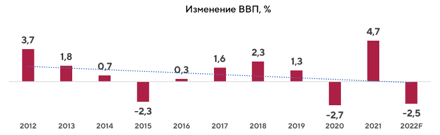
Офисы
Предложение2022 год прошел под знаком политической и экономической неопределенности в России. Изменения в структуре экономики и бизнесе оказали влияние на рынок офисной недвижимости, прежде всего в Москве и Санкт-Петербурге. Введенные в I квартале санкции, геополитические ограничения и риски вынудили многие международные компании приостановить или прекратить свою операционную деятельность в России. Если в начале года преобладала растерянность и выжидательная позиция всех игроков рынка, то в середине года наметилось оживление. Во втором полугодии вакансия в бизнес-центрах начала снижаться.
Количество международных компаний в Казани было минимально, их уход практически не сказался на рынке офисной недвижимости. Международные компании, которые были представлены и занимали помещения в казанских бизнес-центрах, в большинстве своем, продолжили свою работу под российскими брендами. Более того, возрос интерес со стороны компаний телеком-сектора, банковских и финансовых организаций, а также госсектора, что обусловлено политикой и поддерживающими мерами федерального уровня.
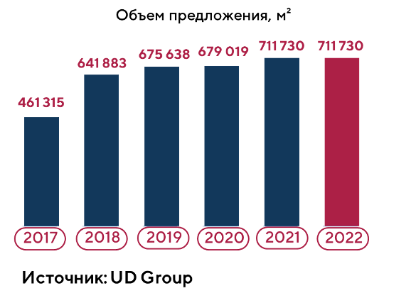
В целом по результатам года казанский рынок офисной недвижимости демонстрирует хорошую устойчивость - доля вакантных площадей на конец года составила 2,7% (сократилась на 3,9 п. п. относительно декабря 2021 года). Сохраняется дефицит качественного предложения: введенный в 2021 году бизнес-центр класса А Orange полностью заполнен арендаторами (ранее заявленный в составе бизнес-центра коворкинг также полностью реализован в формате офисных помещений).
В офисных помещениях класса А уровень вакансии в конце года составил 1,8% (снизился на 10,3 п. п. относительно аналогичного периода 2021 года).
Такое снижение обусловлено планомерным заполнением бизнес-центров Orange и Kremlevskaya Plaza, где имелась высокая вакансия на конец 2021 года. В офисных помещениях класса В+ вакансия по результатам года составила 6,5% (выросла на 0,1 п. п. к 2021 году), в классе B – 2,5% (сократилась на 1,4 п. п. к 2021 году).
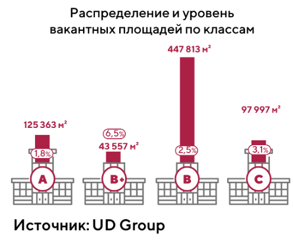
В целом по итогам года вакансия сократилась или осталась на том же уровне во всех классах. На рынке офисной недвижимости наблюдалось перераспределение арендаторов, компании, которые перевели часть сотрудников на удаленный или комбинированный формат работы, сократили штат постоянно находящихся в офисе сотрудников. Это позволило арендовать меньшие по площади, но более качественные офисные помещения либо просто оптимизировать затраты на аренду, снимая меньший офис. Эта же тенденция - трансформация и оптимизация – в 2022 году коснулась всех участников рынка коммерческой недвижимости, в том числе и арендодателей. Так, многофункциональный развлекательный центр Fun Park, расположенный по адресу ул. Мазита Гафури, 46, перепрофилировал часть своих площадей под бизнес центр А4 площадью 550 кв. м (средняя ставка аренды составляет 750 руб./кв. м.)
Открытием 2022 года можно назвать запуск нового ИТ-парка им. Башира Рамеева. Это третий по счету ИТ-парк в Татарстане. Он расположен по ул. Спартаковской, 2 и был построен за рекордные 6 месяцев. ИТ-парк войдет в состав цифрового квартала под названием «Сан», который будет ограничен улицами Туфана Миннуллина, Петербургской, Пушкина, Артема Айдинова, Марселя Салимжанова. В этих пределах уже находятся ИТ-парк и технопарк «Идея», где размещаются современные технологические компании. В периметр проекта также войдут: новый бизнес-центр «Урбан», ТЦ «Сувар Плаза», где располагаются офисы «Яндекса» и разработчиков игр, а также «Школа 21» Сбербанка. Новый ИТ-парк состоит из двух блоков. Первый расположился на месте бывшего кожевенно-обувного комбината «Спартак», а второй построили рядом. Корпуса объединили переходом. Общая площадь нового ИТ-парка составляет 49,3 тыс. кв. м, включает 3 тыс. рабочих мест (16 тыс. кв. м), а также коворкинг «Цифровая библиотека» (1 300 кв. м на 108 рабочих на втором этаже здания. Офисы, расположенные на 2 и 3 этажах, могут арендовать только ИТ-компании (определяются по ОКВЭД). Так, например, офис площадью 340 кв. м предлагается по ставке 1 605 руб./кв. м. (в том числе НДС), при этом офисы полностью меблированы (предполагается отдельный платеж за пользование мебелью). Уровень ставки аренды зависит от размера помещения: чем больше площадь - тем больше ставка. Такая обратная корреляция объясняется принципом «большая компания - больший бюджет». Помещения на первом этаже сдаются сервис-резидентам – компаниям, которые не имеют привязку к ИТ-специализации. Это помещения в предчистовой отделке, которые имеют отдельный вход с улицы. Ставка аренды помещения 137 кв. м составит 1554 руб./кв. м (в том числе НДС, не включая эксплуатационные расходы).
По уровню вакансий в Казани лидирует Кировский район с показателем 10,5%. Это по-прежнему связано с тем, что большинство офисных пространств в Кировском районе (на сегодняшний день 80%) относятся к классу С. В большинстве своем это устаревшие помещения, не удовлетворяющие запросам современных организаций и требующие реновации.
По результатам года вакансия сократилась во всех районах Казани, что говорит об устойчивости и стабильности рынка офисной недвижимости вне зависимости от внешних неблагоприятных факторов.
По уровню вакансий в Казани лидирует Кировский район с показателем 10,5%. Это по-прежнему связано с тем, что большинство офисных пространств в Кировском районе (на сегодняшний день 80%) относятся к классу С. В большинстве своем это устаревшие помещения, не удовлетворяющие запросам современных организаций и требующие реновации.
По результатам года вакансия сократилась во всех районах Казани, что говорит об устойчивости и стабильности рынка офисной недвижимости вне зависимости от внешних неблагоприятных факторов.
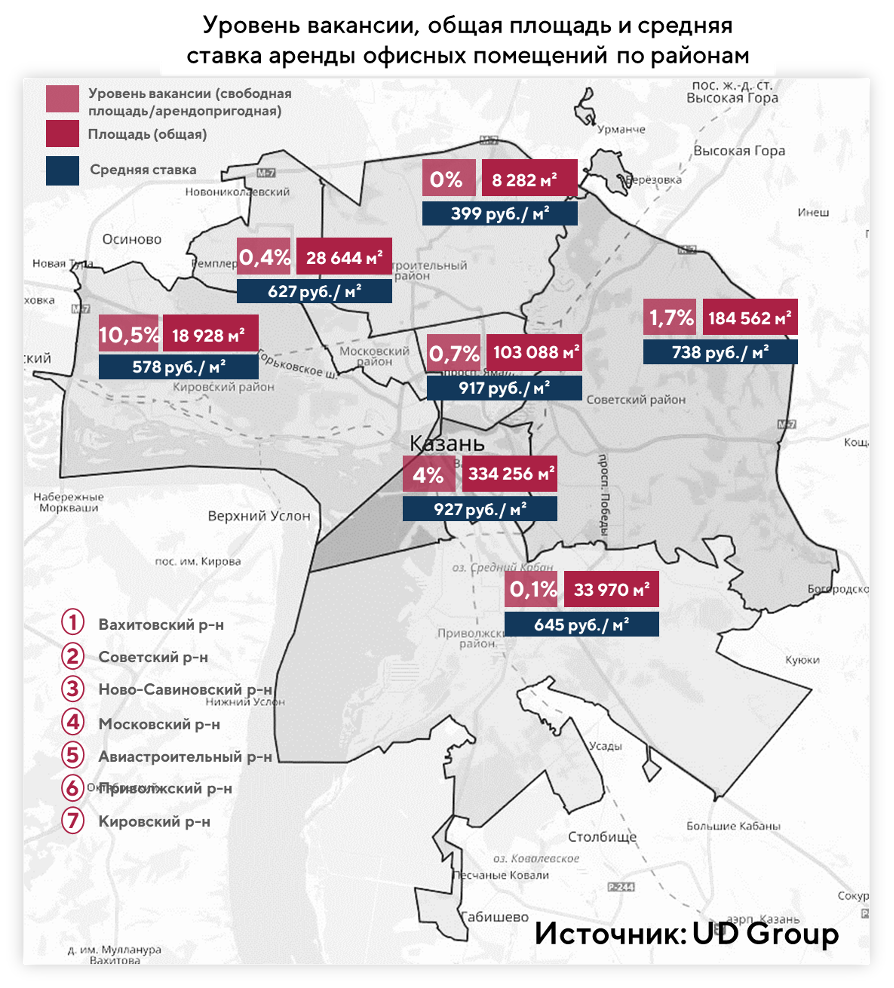
Коммерческие условия
Средняя ставка аренды в бизнес-центрах составила 953 руб./кв. м на конец 2022 года (с НДС, с учетом эксплуатационных расходов). За полгода арендная ставка выросла на 3,8%. В целом за год арендная ставка выросла на 7,7%. Прирост обусловлен экономическими и макроэкономическими факторами, высокой инфляцией, удорожанием материалов и услуг управляющих компаний. Однако, в текущих условиях большинство арендодателей готовы предоставлять дисконты и специальные условия для арендаторов. При опросе арендодателей казанских бизнес-центров класса A и B+, 44% опрашиваемых говорили о возможности предоставлении скидки или наличии специальных условий при заключении договора аренды до конца года. Владельцы бизнес-центров стараются зафиксировать коммерческие условия и сдать оставшиеся свободные площади на длительный период, пока рынок офисной недвижимости пользуется высоким спросом.Средние ставки аренды по итогам года составили: в классе А - 1 704 руб./кв. м (+9,4% к показателю начала года), в классе В+ - 1140 руб./кв. м. (+10,3%) в классе B - 844 руб./кв. м. (+3,9%).
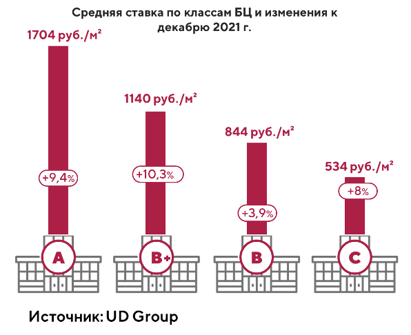
В расчете средней ставки в классе B+ не учтено освободившееся помещение на первом этаже Бизнес Парка на Островского, 87, его ставка превышает более чем в 2 раза среднюю ставку аренды данного бизнес-центра. Помещение расположено на первом этаже бизнес-центра, но не имеет отдельного входа с улицы, вход в помещение осуществляется с общего входа в бизнес-центр. Его сложно отнести к торговому или офисному объекту в чистом виде.
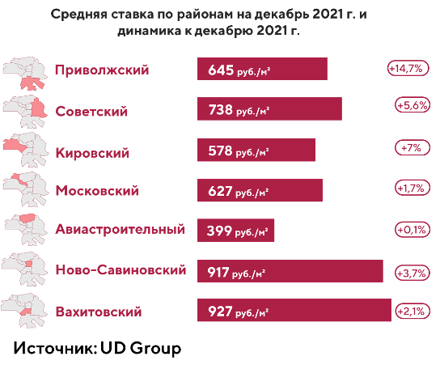
По районам наибольший прирост ставок аренды зафиксирован в Приволжском и Кировском районах. Прирост составил +14,7% и +7% соответственно.
Коворкинги
ПредложениеВсе бизнесы в определенной степени зависят друг от друга и подстраиваются под изменения экономики. Рынок коммерческой недвижимости зависит от арендаторов и от ситуации в бизнесе своих арендаторов. На протяжении 2022 года рынок коворкингов, как и другие рынки, двигался по схеме «снижение – ожидание – восстановление».
В 2022 году предложение на рынке коворкингов Казани выросло относительно 2021 года на 68% к общей площади предложения. Прирост обеспечен выходом крупного федерального игрока SOK (4200 кв. м) на казанский рынок коворкингов, также были запущены коворкинг «Цифровая библиотека» в составе ИТ-парка им. Башира Рамеева (1300 кв. м) и некоммерческий коворкинг «Доброй Казани» (506 кв. м).
Примечательно, что ультрасовременное офисное пространство SOK Пушкин, расположенное по адресу Пушкина, 2 в здании «Золотого Яблока», еще до запуска проекта было сдано моноарендатору. Им стал «Совкомбанк», который открыл смарт-офис на 900 рабочих мест для сотрудников контактного центра. Это уже не первое сотрудничество между SOK и «Совкомбанком», аналогичные сделки заключались и в других городах присутствия SOK.
В августе 2022 года в Казани был запущен коворкинг «Цифровая библиотека» в новом ИТ-парке им. Башира Рамеева по ул. Спартаковской, 2. Коворкинг расположен на втором этаже здания и рассчитан на 108 рабочих мест, общая площадь – 1300 кв. м. Он открыт не только для специалистов в сфере ИТ, но и представителей других сфер бизнеса, при этом коворкинг представлен только в формате «open space». Для удобства предусмотрены: переговорная комната (предоставляется бесплатно, не более чем на 30 мин.), спортивная зона для снятия стресса, обеденная зона. Стоимость аренды фиксированного места в месяц составляет 9000 руб., разовое посещение – 600 руб. в день.
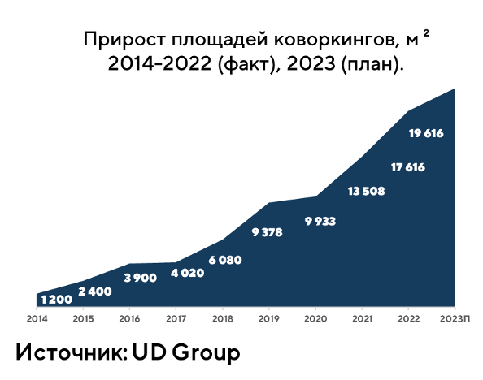
Открытие коворкинга Workki по адресу ул. Баумана, д. 86, которое было одним из самых ожидаемых в III квартале 2022 года, перенесено на март 2023 года. По плану коворкинг займет верхние три этажа (2000 кв. м) здания и будет рассчитан на 367 рабочих мест, а на первом этаже предполагается торговая зона.
Не обошлось и без закрытий – коворкинг Smart Spacе (общая площадь 698 кв. м), расположенный по адресу Гаврилова, 1, прекратил свою работу в связи со сменой собственника здания. Новые собственники планируют использовать площади в других целях. У сети остался один действующий коворкинг, расположенный в Пестречинском районе. Второе закрытие произошло в Ново-Савиновском районе города. Навигатор Кампус (по словам персонала коворкинга) был закрыт по причине личных причин собственника бизнеса. Площадь выбытия по итогам 2022 года составила 1 898 кв. м.
Средняя ставка аренды одного рабочего места в коворкингах Казани составляет 9 688 руб. в месяц и включает все услуги, разовое посещение в среднем по году - 627 руб.
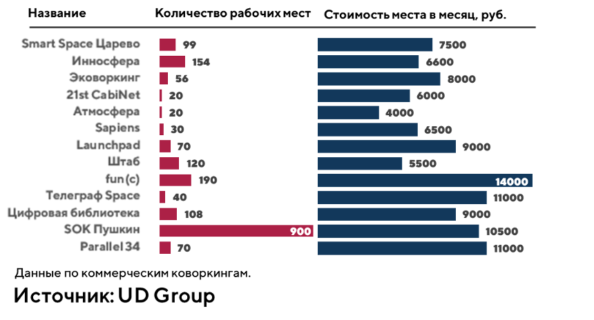
Сейчас в городе 13 коммерческих коворкингов, 4 некоммерческих коворкинга и 2 пространства, работающих в формате оборудованных мини-офисов премиального сегмента. Общая площадь данного сегмента составляет 17 616 кв. м, в том числе с учетом некоммерческих коворкингов, занимающих 1746 кв. м. Некоммерческие коворкинги в Казани представлены коворкингом «Авиатор» в одноименном технопарке, коворкингом по адресу ул. Сеченова, 5, коворкингами в ДК «Московский» и ДК «Сайдаш».
Территориально коворкинги сосредоточены в Вахитовском районе, там представлено 70% площадей от общего предложения. Такое распределение коррелирует со спросом и предложением на рынке офисной недвижимости в целом.
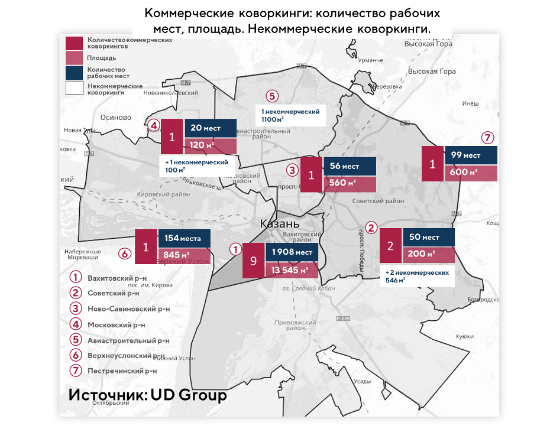
Торговая недвижимость
ПредложениеМакроэкономические события 2022 года спровоцировали массовые заявления западных компаний об уходе или временной приостановке деятельности на территории Российской Федерации. Закрытия магазинов западных ритейлеров повлияли и на объем нового предложения, и на общий трафик покупателей, особенно в крупных торговых центрах. Если в первом полугодии 2022 года собственники торговых площадок занимали позицию ожидания, то во второй половине сменили ее на активные попытки заполнить свободные площади. При этом условия для новых арендаторов предоставлялись максимально комфортные и на рынке сформировалась зависимость: чем выше вакансия в торговом центре, тем лучшие условия могут получить новые арендаторы.
Также отмечается размытие критериев для «якорей» (крупные компании, привлекающие в торговый центр трафик): если ранее только международные «якорные» ритейлеры получали выгодные условия (например, отсутствие фиксов и «голый» процент от оборота), то в 2022 году арендаторы, которые могут прийти на их место, претендовали на аналогичные условия. Многие торговые центры на переговорах с новыми арендаторам предлагали открытие на условиях «все включено», а также более низкие фиксированные ставки аренды с последующим переходом на расчет аренды, как процента от оборота, арендные каникулы и другие преференции.
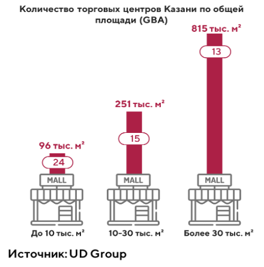
Ситуация на рынке торговой недвижимости была неоднородна и зависела от объема вакансий и спроса. Объекты, максимально сохранившие свой трафик с минимальным объемом вакантным площадей, такие как KazanMall и «Горки Парк», были осторожны в корректировке условий, т.к. смогли сохранить хорошую посещаемость, в том числе благодаря эффективным маркетинговым кампаниям и программам лояльности. Однако ТРЦ МЕГА, несмотря на высокий процент пустующих площадей и снижающийся трафик, не пересмотрела условия и остается наиболее недоступной для входа операторов.
На поведении потребителей также сказались новые условия неопределенности - потребители стали больше копить и меньше тратить на товары не первой необходимости. Поэтому районные торговые центры из-за нацеленности на FMCG в наименьшей степени находились в зоне риска.
В I полугодии 2022 года многие девелоперы заморозили или приостановили проекты новых торговых объектов. Однако уже во II полугодии ситуация начала меняться. Например, продолжились работы в комьюнити-центре ART общей площадью 40 000 кв. м (торговая площадь 21 200 кв. м) на территории ЖК «Арт Сити». Здание представляет собой многофункциональный комплекс с торговым центром и бизнес-центром класса А площадью 10 000 кв. м. Ввод в эксплуатацию ожидается в 2024 году.
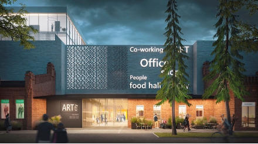
Проект комьюнити-центра ART
«Наш проект, комьюнити-центр «ART», полностью спроектирован под социальные и культурные потребности жителей района и города. Мы стараемся создать его не только визуально привлекательным, «живым» и современным с точки зрения уровня комфорта, но и полным разнообразия услуг и развлечений.» (Мугад Салихов, директор по развитию, UD Group)
На начало года в казанских торговых центрах было представлено 125 иностранных ритейлеров, 25 из них на конец года приостановили свою деятельность, это: Puma, Reebok, Adidas, Levi’s, Zara, Bershka, Pull & Bear, Stradivarius, Oysho, Zara Home, Massimo Dutti, H&M, Sephora от «Иль де Ботэ», The Body Shop, re:Store, Mothercare, Uniqlo, IKEA, Starbucks, Tom Tailor, Pizza Hut, Kiabi, Deichmann, Swarovski, Helly Hansen.
Однако по некоторым брендам были рассмотрены альтернативные вариации преобразования бизнеса в России: продажа российских подразделений международным игрокам из дружественных стран, уход на полноценный формат франшизы, локализация брендов и иные форматы.
На конец 2022 года
• провели реструктуризацию – польские LPP (RE, Син, M, CR, XC), McDonald's («Вкусно и точка»), французский L’Occitane (Л’Окситан), испанский Mango, Reebok (SneakerBOX), Samsonite (ЧемоданPRO), Sephora (выкуплена «Иль де Ботэ»). Из последних преобразований - «Джамилько» выкупил бизнес британской Mothercare в России;• испанский холдинг (бренды Zara, Bershka, Massimo Dutti, Pull & Bear и др.) планирует реализовать российский бизнес ливанской группе компаний Daher. На рынок ливанцы придут со своим брендом и коллекциями;
• Starbucks стал Stars Coffee – активы выкупил музыкант и бизнесмен Тимур Юнусов, известный как Тимати, и ресторатор Антон Пинский;
• магазины Lego датского производителя конструкторов открылись под названием «Мир кубиков». Эксклюзивный партнер компании Inventive Retail Group, планирует также продавать конструкторы, в том числе Lego;
• американская компания Yum! Brands продала около 70 ресторанов сети KFC ижевскому франчайзи «Смарт Сервис». Новые точки сети откроются под брендом Rostic’s;
• норвежский бренд одежды Helly Hansen ожидает ребрендинг, возможное название «Хансен»;
• французский Decathlon не расторг договоры аренды и продолжал арендовать здания рядом с торговым центром «Тандем» и на ул. Родины.
При этом наблюдается высокий интерес со стороны российских брендов к площадкам, которые ранее занимали международные операторы. Известно, что российский бренд Gloria Jeans планирует занять торговые площади, ранее принадлежавшие H&M, Zara и Adidas. Melon Fashion Group (МФГ), который включает в себя российский бренд женской одежды и аксессуаров Lime, сеть мультибрендовых магазинов модной одежды и аксессуаров «Снежная королева», турецкий фешн-бренд Koton также активно занимают площади H&M.
Уход международных брендов с российского рынка способствовал развитию параллельного импорта в стране - маркетплейсы Ozon и Wildberries начали торговать товарами международных брендов. Также получили развитие доставки из европейских стран: «Почта России» и CDEK запустили платформы «Почта Global» и CDEK Forward, которые позволяют делать покупки на международных сайтах.
Уровень вакансии в качественных торговых центрах Казани на конец года составил 16,4%. При этом максимальный показатель вакансии сохраняется в торговом центре МЕГА – 53%, где максимально сконцентрированы международные бренды, которые приостановили свою деятельность.
Сейчас на территории Казани 51 торговый объект, суммарная площадь составляет порядка 1 млн. кв. м. Сюда включены как торговые площади операторов DIY и продуктовых ритейлеров, так и 13 качественных современных торговых центров (под качественными торговыми центрами принимаются концептуальные объекты, с арендопригодной площадью более 17 тыс. кв. м), общей площадью 814,7 тыс. кв. м, из них 457,4 тыс. кв. м - арендопригодная площадь.
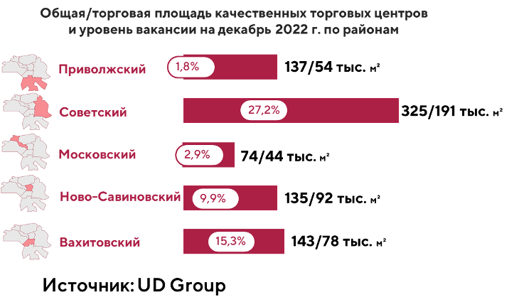
Стрит-ритейл
Несмотря на неблагоприятную экономическую ситуацию, по итогам 2022 года уровень вакансии площадей в сегменте стрит-ритейла в Казани сократился на 1,4 п. п. к началу года и составил всего 7,1%. Это говорит о том, что ковидные ограничения в 2021 году имели гораздо большее влияние на рынок стрит-ритейла, чем социально-экономические проблемы, с которыми экономика столкнулась в 2022 году. Оцепенение арендаторов, которое мы наблюдали в I квартале 2022, сменилось активным ростом во II и III кварталах.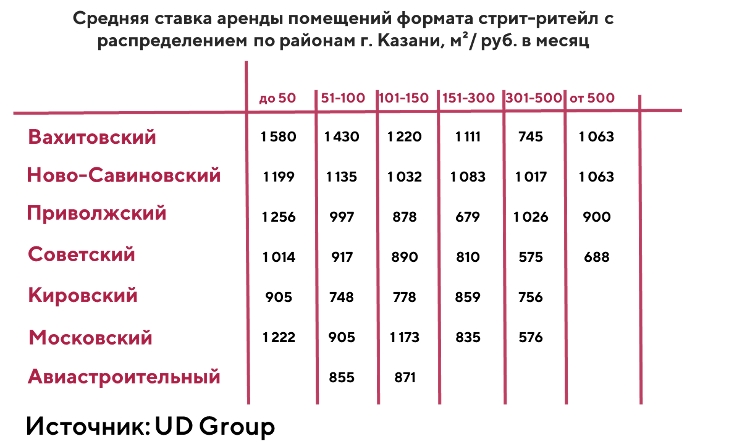
В IV квартале за счет общей экономической неопределенности и негативной новостной повестки часть арендаторов взяли паузу чтобы подстроиться под текущие обстоятельства при необходимости. По результатам года стрит-ритейл оказался наиболее устойчивым и востребованным сегментом коммерческой недвижимости.
Доля вакантных площадей в разрезе торговых коридоров составляет порядка 2%, где наибольший уровень вакансии – 5,9% - наблюдается на улице Чистопольской, а на улицах Баумана, Университетская и Достоевского вакансия нулевая.
Средняя ставка аренды во II полугодии составила 993* руб./кв. м. (в том числе НДС), что выше на 15% этого значения на начало года. Максимальный рост был зафиксирован в Московском и Вахитовском районах, +24% и 23% соответственно. Расчет ставки аренды по сегменту стрит-ритейла здесь и далее ведется по свободным помещениям, представленным в открытом источнике на сайте cian.ru.
По торговым коридорам Казани наибольшая ставка зафиксирована на улицах Пушкина, Островского и Чернышевского.
Как показывают результаты года, ликвидные объекты, расположенные в востребованных локациях с интенсивным пешеходным трафиком, не потеряли в уровне арендной ставки и в спросе у арендаторов.
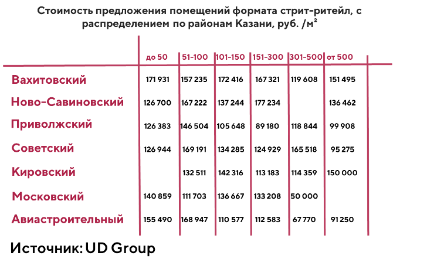
В 2022 году наблюдался рост стоимости (по предложению) помещений формата стрит-ритейл. На конец года средняя цена 1 кв. м составила 139 252 руб., по сравнению с началом года она выросла на 67%. Высокая неопределенность на рынке жилой недвижимости, недоступность лотов (из-за роста цен, колебаний ключевой ставки), стагнация рынка жилья заставили инвесторов переключиться на коммерческие объекты. В такой ситуации площади стрит-ритейла выглядели привлекательно.
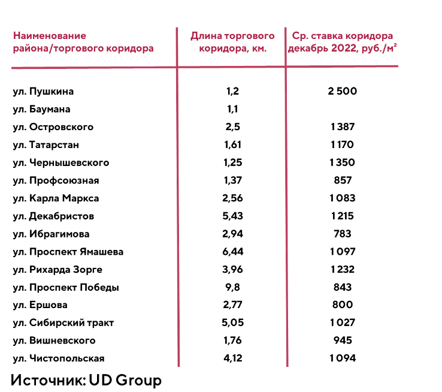
Складская недвижимость
ПредложениеВ 2022 году наблюдался рост стоимости (по предложению) помещений формата стрит-ритейл. На конец года средняя цена 1 кв. м составила 139 252 руб., по сравнению с началом года она выросла на 67%. Высокая неопределенность на рынке жилой недвижимости, недоступность лотов (из-за роста цен, колебаний ключевой ставки), стагнация рынка жилья заставили инвесторов переключиться на коммерческие объекты. В такой ситуации площади стрит-ритейла выглядели привлекательно.
Также в декабре 2022 года было достигнуто соглашение об использовании татарстанским маркетплейсом KazanExpress первого в Татарстане бондового склада на мощностях «Почты России», который расположен рядом с аэропортом. Эксперимент начнется в апреле 2023 года. «Почта России» выделила два склада на базе своих логистических объектов в Москве и Казани и готова оперативно расширить площадь бондовых складов в случае высокого интереса со стороны клиентов.
Вакансия логистических центров класса А и В по итогам второго полугодия 2022 года составила 5,2%, что на 2,4 п. п. выше аналогичного показателя в первом полугодии, и ниже показателей конца 2021 года на 4 п. п. В 2021 году высокий уровень вакансии на складские помещения был вызван переездом крупного арендатора Х5 в свой логистический центр. В связи с этим, освободились большие площади качественных арендопригодных помещений и выросла вакансия. Сейчас Казань продолжает укреплять свои позиции в качестве важнейшего логистического хаба России, что так или иначе будет провоцировать рост складской недвижимости.
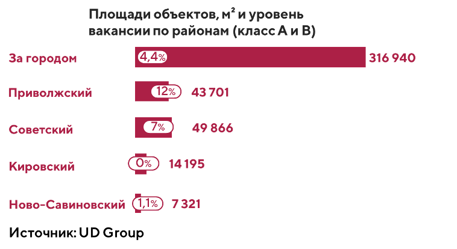
Коммерческие условия
Несмотря на текущие события и их негативное влияние на российскую экономику, в 2022 году на рынке складской недвижимости Казани сохраняется высокий спрос на качественные помещения. В связи с этим уровень ставки аренды на складские помещения не снижается.Ставки аренды в классе А составили 609 руб./кв. м, в классе В – 523 руб. /кв. м. Средняя ставка аренды составила 595 руб./кв. м (ставки указаны без НДС, с учетом эксплуатационных
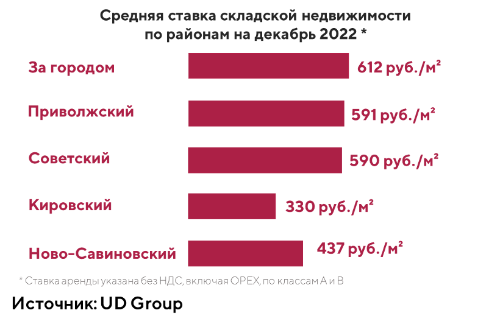
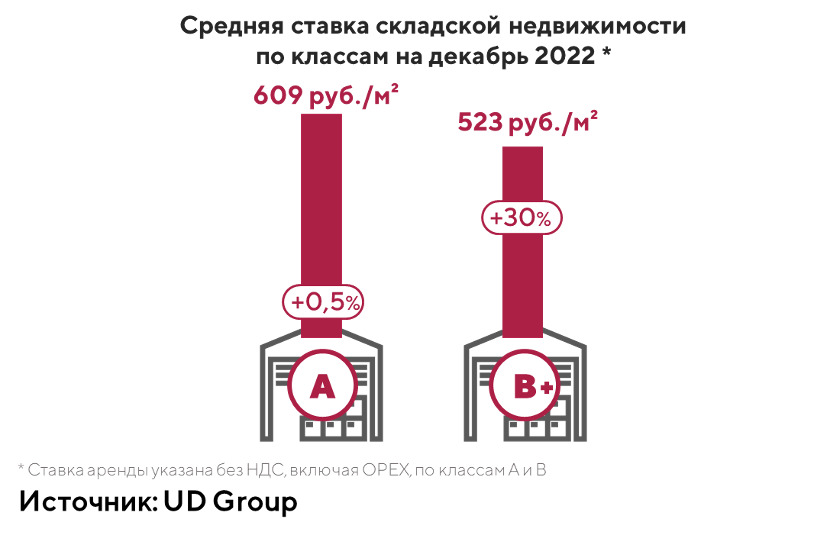
Основные тенденции и прогнозы рынка
ОфисыМассовые закрытия магазинов западных ритейлеров влияют на объем нового предложения и общий трафик покупателей, особенно в крупных торговых центрах. Торговые центры, которые сильнее всего пострадали от ухода западных брендов, рассматривают варианты перепрофилирования своих территорий. За счет создания гибридных пространств продолжат появляться варианты общественных территорий, галерей и дизайнерских ярмарок. Так в мае 2022 года ТРЦ МЕГА в Казани открыла выставку «Точка отсчета», на которой были представлены работы локальных художников, а в июне заработала выставка загородных объектов Татарстана. В ТЦ KazanMall в октябре проводилась выставка недвижимости от ведущих агентств недвижимости Казани.
Объекты с одной функцией (монофункциональные) продолжат работать на микрорайонном и районном уровне. Они все так же будут востребованы в зоне жилой застройки, в местах сильных автомобильных и пешеходных потоков.
Негативным фактором является малый объем нового строительства, который обусловлен как переносом сроков открытия новых ТЦ, так и тенденцией к смене их форматов. Данный фактор свидетельствует о выжидательной позиции девелоперов в планах развития отрасли. В целом рынок фокусируется на объектах небольшого масштаба (5-20 тыс. кв. м), поскольку они опираются на более устойчивую потребительскую аудиторию. Хорошие перспективы наметились у ритейла в составе МФК (многофункциональных комплексов).
Еще одним фактором, который оказывает серьёзное влияние на рынок торговой недвижимости, является переход покупателей в онлайн. У владельцев торговых центров формируется стратегическая задача по включению онлайн-заказов в товарооборот физического магазина, альтернативой может стать смена формата торгового центра, включение и расширение развлекательной функции в его составе.
Параллельно уходу международных сетей из торговых центров развивается и встречный интерес со стороны иностранных ритейлеров, которые в 2022 году приняли решение выйти на российский рынок или расшириться – это армянский Alex YVN, турецкие Ipekyol и Twist, Enza Home, французский Precise Paris и другие. Однако сохраняющийся высокий уровень риска в экономике и трансформации, происходящие с арендаторами ТЦ, продолжат корректировать планы всех участников рынка, что может привести в 2023 году к росту уровня свободных площадей до 20%.
«На наш взгляд, на данный момент один из актуальных форматов коммерческой недвижимости – это многофункциональные комплексы (МФК). Они объединяют в себе торговые пространства, места для развлечений, отдыха, хобби и рабочие места разных форматов, включая коворкинги и привычные офисы, могут иметь в своем составе жилье или вписываться в жилую застройку. МФК – ответ на актуальные тренды: «15-минутный город», полицентричность. Эти концепции предполагают такое развитие города, когда места притяжений создаются в каждом районе, а все необходимое житель современного мегаполиса может получить в пешей доступности от дома, потратив не более 15 минут. » (Виталия Колегов, управляющий директор UD Group)
Стрит-ритейл
Сегмент стрит-ритейла в Казани не был сильно представлен зарубежными брендами, поэтому уход ключевых компаний с российского рынка не оказал влияние на показатели этого сегмента. Помещения стрит-ритейла остаются привлекательными для небольших сетей и имеют высокий интерес среди инвесторов. Негативное влияние на этот интерес может оказать темп роста арендных ставок и рост стоимости продажи помещений, который наметился в прошлом году.В кризис особенно хорошо показали себя супермаркеты федеральных сетей, они являются самыми надежными арендаторами на сегодняшний день. Также на казанском рынке растет спрос со стороны федеральных продуктовых ритейлеров в сегменте дискаунтеров. Одно из ожидаемых открытий - выход на казанский рынок сети «Чижик» от X5 Retail Group. Конкурентами «Чижика» в Казани могут стать магазины «Магнит Моя цена», «Находка» и «Светофор». Операторы на протяжении 2022 года находился в поиске помещения от 380 до 1000 квадратных метров (в том числе с торговой зоной не менее 260 м).
Продолжается тренд массового перехода покупателей в онлайн, что способствует стремительному развитию форматов даркстор и пунктов выдачи заказов в сегменте стрит-ритейла. По данным АКИТ (Ассоциации компаний интернет-торговли) объем российского рынка интернет-торговли в 2022 году вырос более чем на 30% и достиг 5,17 трлн рублей.
«Наша команда оказывает полный спектр услуг по управления коммерческой недвижимостью разных форматов: ритейл-парк, торговые и офисные здания, стрит-ритейл, паркинги. Традиционные факторы, влияющие на стоимость аренды – это локация, концепция, техническое состояние объекта. Для разных видов бизнеса существенными могут быть подъездные пути, парковка, удобный вход, панорамные окна, наличие обслуживающей организации. Все более важным становится тенант-микс. Сейчас наши клиенты все чаще хотят получить качественное предложение, учитывающее будущих соседей и их потенциальное влияние на бизнес. Именно объекты, в котором наиболее продуманный тенант-микс, и являются максимально востребованными, в качестве примера могу назвать стрит-ритейл в ЖК Арт Сити, а также в Ритейл-Парке Udacha в ЖК Царёво Village. Получается, что на спрос и потенциал объекта будет влиять, в том числе, и качественное управление.» (Регина Пашагина, руководитель направления FM, UD Group)
Офисная недвижимость
В 2022 году рынок офисной недвижимости несмотря на неопределенность, вызванную экономическими и политическими факторами, демонстрировал устойчивость и достаточно хорошую активность. Однако активность арендаторов, в большинстве своем, связана с оптимизацией и переездами, а не с расширением площадей и открытиями дополнительных офисов. Во многих компаниях продолжается сокращение удаленного формата работы и возвращение сотрудников в оффлайн.В структуре спроса большая доля приходится на транспортные, строительные компании, ИТ-компании, медицинский и образовательный бизнесы, а также госучреждения. При этом арендаторы офисной недвижимости сокращают издержки при заезде и отдают предпочтения готовым объектам. В связи с экономической ситуацией спрос на помещения, требующие отделки и финансовых вложений, значительно сократился.
В целом на рынке казанской офисной недвижимости сохраняется сбалансированная ситуация. Можно прогнозировать, что активность арендаторов при низком вводе новых офисных площадей (класс А) позволит и дальше удерживать вакансию на низком уровне. Незначительно падают цены на старый невостребованный фонд или офисы, удаленные от главных магистралей города. Однако явных предпосылок к заметной коррекции коммерческих условий не прогнозируется.
В целом по стране события года способствовали переходу проектов на модель built-to-suit (строительство под конкретного заказчика). Наблюдается переток непрофильных девелоперов в другие сегменты. По некоторым площадкам с офисным потенциалом девелоперы принимают решение строить жилье. В сегменте коммерческой недвижимости остаются только опытные игроки, у которых есть понимание, как рассчитывать себестоимость офисного проекта, профессионально оценивать локацию и экспертиза в данном сегменте.
Коворкинги в сегодняшних реалиях становятся еще более востребованным сегментом, поскольку дают возможность арендаторам получить быстрое и качественное решение по рабочему пространству. Они сочетают в себе более гибкие условия по аренде и включенный в контракт сервис, нежели классическая аренда с расходами на ремонт и оснащение офиса. Сегодня клиенты коворкингов - это госкомпании, телекоммуникационные компании, банки. В том числе и западные компании, которые переформатируют свой бизнес на территории России и имеют совершенно иные запросы в отношении офиса, нежели раньше. На рынке появился тренд на «борьбу за кадры». Поэтому локация офисов, его дизайн и удобство инфраструктуры рядом выходят на первый план при выборе помещений.
Складская недвижимость
Несмотря на сложные экономические и политические вызовы 2022 года казанский рынок складской недвижимости остается самым надежным сегментом рынка коммерческой недвижимости. Это самый стабильный сегмент в ближайшей перспективе, этому способствует расцвет онлайн-торговли и гибридизация оффлайн-операторов. Также растет спрос на производственно-складские помещения со стороны отечественных компаний, которые начали активно развиваться в рамках курса политики на импортозамещение.Кроме этого, сегодня мы наблюдаем переориентацию поставок: с Москвы и Московской области - на регионы, в связи с чем Казань становится еще более востребованной среди арендаторов складов. Казань обладает перспективной транспортной инфраструктурой. Это связано, во-первых, со снабжением и развитием прилегающих регионов внутри страны, а во-вторых, с логистикой товаров на пути из Азию в Европу и обратно. Через Казань будет проходить автобан Европа-Западный Китай, ключевую часть которого, трассу М-12 (Москва - Казань), правительство обещает проложить к 2024. Все эти факторы подталкивают компании наращивать складские мощности на территории республики.
На протяжении последних лет основными драйверами спроса на складские площади являются e-commerce и классический ритейл, преимущественно продуктовый, развивающий в том числе и популярный формат дискаунтеров.
При этом, ввиду ограниченности качественного предложения на региональном рынке, сделки совершаются по формату built-to-suit («строительство под клиента»). Этому способствует и специфика запросов ритейлеров, которые часто можно реализовать только путём строительства в соответствии с их требованиями. Таким образом, складской сегмент в очередной раз демонстрирует свою устойчивость перед кризисами. Огромный потенциал e-commerce дает все предпосылки прогнозировать высокий спрос в данном сегменте.
«Мы видим неудовлетворенный спрос на объекты light industrial. Его формируют текущие резиденты производственно-складских помещений на территории промзон, подлежащих редевелопменту, а также селлеры, которые активно заходят на маркетплейсы и ищут площади под организацию собственного производства. Оценив потенциал рынка производственно-складской недвижимости в агломерации Казани, компания UD Group приступила к разработке собственной концепции проекта в формате light industrial.» (Регина Лочмеле, руководитель направления «Стратегический маркетинг», UD Group)

Расскажите нам о своем проекте
Кратко опишите задачу: наш специалист свяжется с вами в ближайшее время, чтобы обсудить детали.